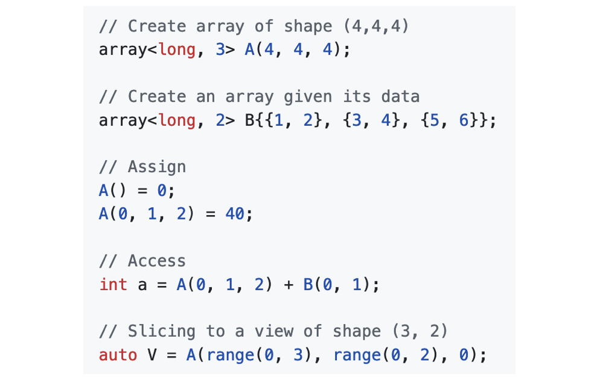

I'm a Research Scientist in the
Center for Computational Quantum Physics (CCQ)
at the
Flatiron Institute
interested in the development and implementation of modern computational techniques to solve the quantum many-body problem
in condensed matter physics. I work with a variety of numerical methods, including Dynamical Mean-Field
Theory, Continuous-time Quantum Monte Carlo, Exact Diagonalization, Functional Renormalization Group and
Diagrammatic Perturbation Theory. I am very enthusiastic about modern open-source software development using C++
and Python, with a particular focus on high-performance computing and parallel programming.
At CCQ I am currently the lead developer of the
TRIQS
open-source software library.
I obtained my M.Sc. in physics from RWTH Aachen University and my Ph.D. from the University of Tübingen in Germany.
Research
Quantum Embedding
Quantum embedding methods such as the "Dynamical Mean Field Theory" (DMFT)
describe a solid in terms of an atom embedded in its electronic environment,
and have lead to major advances in our understanding of strongly correlated materials.
I worked on so-called cluster extensions of DMFT, which aim to overcome
the limitations of the original DMFT approach by including non-local correlations.
Impurity Solvers
In Quantum impurity models a few atomic degrees of freedom interact with a reservoir of electrons.
They serve as prototypes for studying open quantum systems, and play a central role in embedding methods like DMFT.
Numerically solving these models is challenging and often the computational bottleneck.
I worked on both algorithmic development and implementation for various flavors of quantum impurity solvers,
including continuous-time Quantum Monte-Carlo, exact diagonalization and tensor-network based solvers.

Vertex Functions
Vertex functions are the mathematical objects that encode effective interactions
between particles in a many-body systems.
They are numerically challenging due to their large storage size and the high
computational cost of the algorithms, but are often crucial to the description
of fascinating material properties, such as high-temperature superconductivity.
I worked both on algorithmic development and implementation of vertex-based algorithms
such as the TRILEX method.
Software
I am very enthusiastic about the development of high-performance scientific software
using a combination of Modern C++ and Python.
Find below a selection of open-source scientific software projects that I actively develop.
TRIQS Library
I am the lead developer of the
TRIQS
open-source library, a Toolbox for Research in Interacting Quantum Systems.
TRIQS provides various building blocks, such as Green functions, many-body operators, and Monte Carlo tools,
that facilitate high-performance implementations of algorithms to solve quantum many-body problems.
TRIQS Applications
TRIQS applications
assemble the building blocks provided by the TRIQS library into a high-performance implementations of
Many-Body algorithms. These implementations include various flavors of embedding methods (e.g. TRILEX),
impurity solvers, analytic continuation tools and interfaces to community codes.
I have developed and worked on a large number TRIQS applications.
 TRILEX Self-Consistency Loop
TRILEX Self-Consistency Loop
NDA Multi-dimensional Array Library
I the lead developer of
nda
, a C++ library providing an efficient and flexible multi-dimensional array class.
NDA is coded in C++20 using concepts, and is an essential building-block of the TRIQS project.
Some features of the library include lazy expression evaluation, lightweight view-types,
as well as HDF5, MPI, GPU and BLAS/Lapack support.

Selected Papers
-
Linear resistivity and Sachdev-Ye-Kitaev (SYK) spin liquid behavior
in a quantum critical metal with spin-1/2 fermions
P. Cha, N. Wentzell, O. Parcollet, A. Georges, and E.-A. Kim
Proc. Natl. Acad. Sci. U.S.A. 117, 18341
-
Tracking the Footprints of Spin Fluctuations: A MultiMethod,
MultiMessenger Study of the Two-Dimensional Hubbard Model
T. Schäfer, N. Wentzell, F. Šimkovic, IV, Y.-Y. He,
C. Hille, M. Klett, C. J. Eckhardt, B. Arzhang,
V. Harkov, F.-M. Le Régent, A. Kirsch, Y. Wang,
A. J. Kim, E. Kozik, E. A. Stepanov, A. Kauch,
S. Andergassen, P. Hansmann, D. Rohe, Y. M. Vilk,
J. P. F. LeBlanc, S. Zhang, A.-M. S. Tremblay, M. Ferrero,
O. Parcollet, and A. Georges
Physical Review X 11, 011058
-
High-frequency asymptotics of the vertex function:
Diagrammatic parametrization and algorithmic implementation
N. Wentzell, G. Li, A. Tagliavini, C. Taranto, G. Rohringer,
K. Held, A. Toschi, and S. Andergassen
Physical Review B 102, 085106
-
Efficient implementation of the parquet equations: Role of the
reducible vertex function and its kernel approximation
G. Li, N. Wentzell, P. Pudleiner, P. Thunström, and K. Held
Physical Review B 93, 165103
-
Correlated starting points for the functional renormalization group
N. Wentzell, C. Taranto, A. Katanin, A. Toschi, and S. Andergassen
Physical Review B 91, 045120